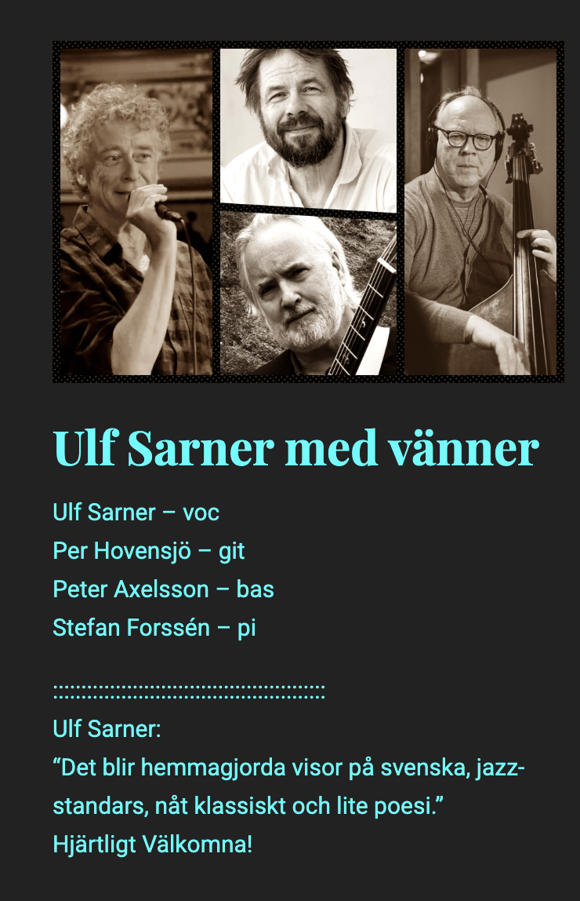

Evenemang
-
SOMMERFUGLEDALEN av Inger Christensen och Stefan Forssén
5/9, kl. 19 Sct. Johannes Kirke i Vejle, Danmark Utan kör. Medverkande: Anne Mette Balling, sopran; Jørgen Andersen, bas; Lise Schiøler Kjær, oplæsning; Stefan Forssén, klaver -
SOMMERFUGLEDALEN av Inger Christensen och Stefan Forssén
6/9, kl. 15 Efterskole, Svendborgvej 10, 5762 Vester Skerninge, Danmark Utan kör. Medverkande: Anne Mette Balling, sopran; Jørgen Andersen, bas; Lise Schiøler Kjær, oplæsning; Stefan Forssén, klaver -
Konsert på Brötz
10/9, kl. 21 (ändrad tid) Paviljong 8, Konstepidemin, Göteborg  -
Änglaspel i Stockholm
18/10, kl. 18 Gröndals kyrka, Stockholm -
Änglaspel i Göteborg
5/11 (ändrat datum), kl. 19 Folkteaterns foajé, Göteborg -
Änglaspel fyller 50 år!
År 2026! Torsdagen den 13/1, kl. 20 Fasching, Stockholm Änglaspel tillsammans med sångerskan Lena Willemark.
Kontakt
Mailadress:
stefanforssen@konstepidemin.sePostadress:
Konstepidemin, Hus 13413 14 Göteborg